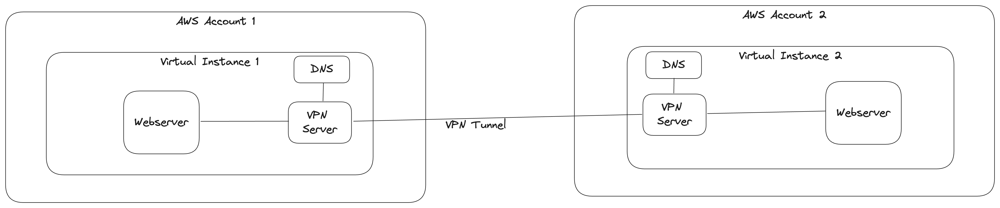

In this lab, we will install some services on an AWS Virtual Instance and configure a VPN connection these two instances in different AWS accounts. It is recommended to use two different AWS accounts for this lab to simulate a real-world scenario. Ideally, this lab should be done in a group of two people.

If you are not familiar with these steps, please refer to the lab Linux Basics on AWS.
sudo apt update
sudo apt install mkdocs
The command apt update updates the package list to ensure you get the latest version of the package. The command apt install mkdocs installs the mkdocs package and its dependencies.
After the installation, you can create a new project with the following command:
cd ~
mkdocs new my-very-fancy-website
This will create a new directory called my-very-fancy-website with a basic configuration file and a sample markdown file.
Start the development server with the following command:
cd my-very-fancy-website
mkdocs serve &
This will start a development server on port 8000 in the background. You can validate the installation by running curl on the Virtual Instance:
curl localhost:8000
You should see the content of the sample markdown file.
Furthermore, you can investigate which ports are open on the Virtual Instance by running the following command:
sudo netstat -tulpen
You should see that a python process is listening on port 8000.
When you are done, you can stop the development server with the following command:
killall mkdocs
This will stop the development server.
To access the website from the internet, you need to create a reverse proxy. A reverse proxy is a server that sits between the internet and your web server. It forwards client requests to the web server and forwards the web server's response to the client.
sudo apt install nginx
The command apt install nginx installs the nginx package and its dependencies.
After the installation, you can configure the reverse proxy by creating a new configuration file in the /etc/nginx/sites-available directory.
sudo nano /etc/nginx/sites-available/my-very-fancy-website
Add the following configuration to the file:
server {
listen 80;
server_name my-very-fancy-website.com;
location / {
proxy_pass http://localhost:8000;
proxy_set_header Host $host;
proxy_set_header X-Real-IP $remote_addr;
proxy_set_header X-Forwarded-For $proxy_add_x_forwarded_for;
proxy_set_header X-Forwarded-Proto $scheme;
}
}
This configuration listens on port 80 and forwards all requests to the development server running on port 8000. The proxy_pass directive specifies the URL of the proxied server. The proxy_set_header directives set the headers that will be passed to the proxied server.
After saving the configuration file, you need to create a symbolic link to the /etc/nginx/sites-enabled directory.
sudo ln -s /etc/nginx/sites-available/my-very-fancy-website /etc/nginx/sites-enabled/
This will enable the configuration.
Finally, you need to restart the nginx service to apply the changes.
sudo systemctl restart nginx
When you are done, you can validate the configuration by running curl on the Virtual Instance:
curl localhost
You might notice that the website is not accessible from the Virtual Instance. This is because we are using the domain name my-very-fancy-website.com which is not resolvable. To fix this, you can add an entry to the /etc/hosts file.
sudo nano /etc/hosts
Add the following line to the file:
127.0.0.1 my-very-fancy-website.com
After saving the file, you can validate the configuration by running curl on the Virtual Instance:
curl my-very-fancy-website.com
Now you should see the content of your website.
Let's assume that this is a very important website, you don't want to expose it to the internet. Instead, you want to access it through a VPN connection. To achieve this, you need to create a VPN connection between two Virtual Instances in different AWS accounts.
Now, we need to configure the VPN connection. In this case, we will use WireGuard, a modern VPN protocol that is easy to configure.
sudo apt update
sudo apt install wireguard
After the installation, you need to generate a private and public key pair on both Virtual Instances.
wg genkey | tee privatekey | wg pubkey > publickey
This command generates a private key and writes it to a file called privatekey and generates a public key and writes it to a file called publickey.
Now, you need to exchange the public keys between the Virtual Instances. Therefore, send the content of the publickey file to your partner and vice versa.
After exchanging the public keys, you need to configure the WireGuard interface on both Virtual Instances.
sudo nano /etc/wireguard/wg0.conf
Add the following configuration to the file:
[Interface]
PrivateKey = <Private Key of Your Machine>
Address = 10.0.0.1/24
ListenPort = 51820
[Peer]
PublicKey = <Public Key of your Colleague>
AllowedIPs = 10.0.0.2/32
Endpoint = <Public IP of Peer 2>:51820
[Interface]
PrivateKey = <Private Key of Your Machine>
Address = 10.0.0.1/24
ListenPort = 51820
[Peer]
PublicKey = <Public Key of your Colleague>
AllowedIPs = 10.0.0.2/32
Endpoint = <Public IP of Peer 2>:51820
After saving the configuration file, you need to start the WireGuard interface.
sudo wg-quick up wg0
This will start the WireGuard interface. You can validate the configuration by running the following command:
sudo wg show
You will find out that the WireGuard interface is up and running on one of the Virtual Instances. The connection between the virtual instances is not established because firewalls are blocking the traffic.
To allow the traffic, you need to configure the security group of the Virtual Instances. Therefore, you need to add a new inbound rule to the security group. Therefore, switch to the AWS console and navigate to the security group of the Virtual Instance. Add a new inbound rule with the following configuration:
After saving the configuration, you can validate the connection by running the following command:
ping (IP of the other Virtual Instance)
You should see that the ping is successful.
Now that the VPN connection is established, you can access the website through the VPN connection.
After applying the changes, you can validate the configuration by running curl on the Virtual Instance:
curl my-very-fancy-website.com
On the other Virtual Instance, you can validate the configuration by running curl with the name of the other server on the Virtual Instance.
At this point, you have a working VPN connection between two Virtual Instances in different AWS accounts and configured the name resolution to access the website through the VPN connection. However, the configuration is not very flexible because you need to update the /etc/hosts file on both Virtual Instances whenever the IP address of the Virtual Instance changes.
To make the configuration more flexible, you can use a DNS server to resolve the domain name to the IP address of the Virtual Instance. In this case, we will use BIND, a flexible and extensible DNS server.
sudo apt update
sudo apt install bind9
After the installation, you need to configure the DNS server on both Virtual Instances.
sudo nano /etc/bind/named.conf.local
Add the following configuration to the file:
zone "fancy-websites.org" {
type master;
file "/etc/bind/fancy-websites.org";
};
After saving the configuration file, you need to create a new zone file in the /etc/bind directory (my-very-fancy-website.com) (.
sudo nano /etc/bind/fancy-websites.org
Add the following configuration to the file:
$ORIGIN fancy-websites.org.
$TTL 86400
@ IN SOA ns1.fancy-websites.org. admin.fancy-websites.org. (
2022032401 ; Serial
3600 ; Refresh
1800 ; Retry
604800 ; Expire
86400 ) ; Minimum
@ IN NS ns1.fancy-websites.org.
ns1 IN A VPN IP of your Virtual Instance
instance-a IN A VPN IP of Instance A
instance-b IN A VPN IP of Instance B
After saving the configuration file, you need to restart the BIND service to apply the changes.
sudo systemctl restart bind9
At this point, you have a working DNS server that resolves the domain name to the IP address of the Virtual Instance. You can validate the configuration by running the following command:
dig @localhost instance-a.fancy-websites.org
dig @localhost instance-b.fancy-websites.org
You should see the IP address of the Virtual Instance.
Now you can update the nginx configuration (/etc/nginx/sites-available/my-very-fancy-website) to use the new domain names instead of their ip addresses. To use the DNS server, you need to update the wireguard configuration to use the dns servers. Therefore, you need to add the following configuration to the wireguard configuration file.
DNS = the IP of the other Virtual Instance
After applying the changes, you can validate the configuration by running curl on the Virtual Instance:
curl instance-a.fancy-websites.com
On the other Virtual Instance, you can validate the configuration by running curl with the name of the other server on the Virtual Instance.
In this lab, you have learned how to install some services on an AWS Virtual Instance and configure a VPN connection between two Virtual Instances in different AWS accounts. You have also learned how to access a website through a VPN connection and how to configure a DNS server to resolve the domain name to the IP address of the Virtual Instance.
Don't forget to clean up your AWS resources after you have finished the lab.